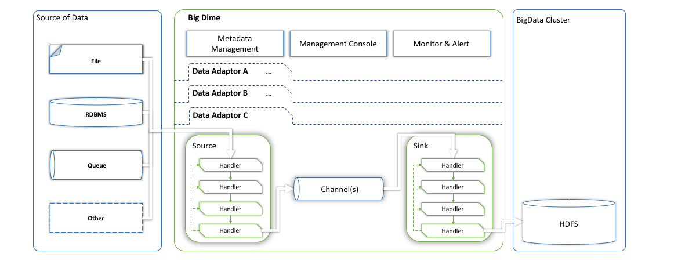
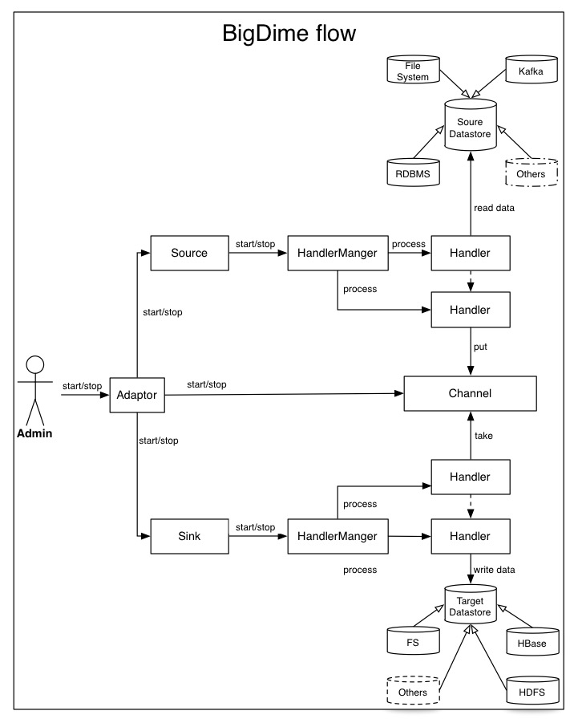
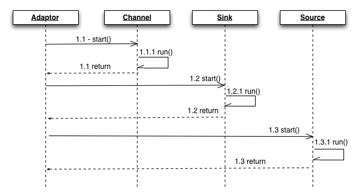
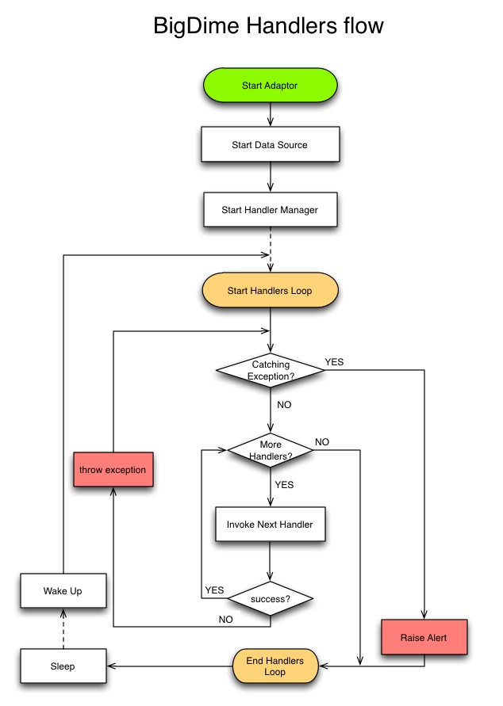
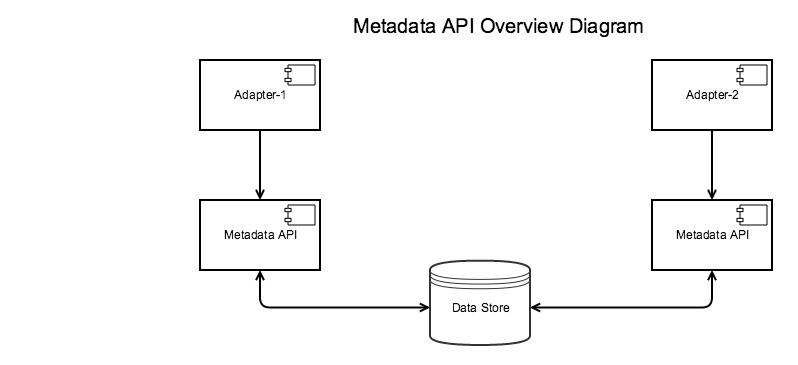
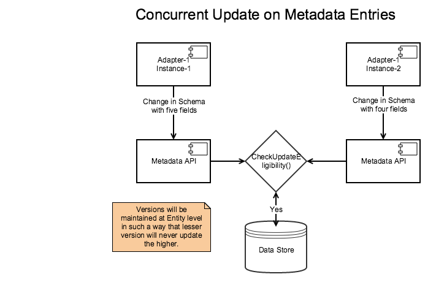

Architecture
How It Works?
Understanding the components and flow would be best way to get to know BigDime better.

Drilling down further to understand flow, how BigDime works! Lets look under the hood.

What is an Adaptor?
An Adaptor is single unit of work horse to ingest data from a source to BigData. The adaptor consists of Source, Channel and Sink modules. Source and Sink modules are composed with handlers in sequence. Each Handler is designed to do a single simple task and hand over to next handler. Channel is a queue to stage the data to be consumed by Sink. Channel gives freedom for Source and Sink to work on its own pace.
The adaptor can be configured, started, and stopped. Several Adaptors could run concurrently at various schedules within BigDime Framework.
Adaptor Flow

Adaptor Configuration
Rules
Configuration
- Source
- There is only one Source element per adaptor and it's defined as a single node element.
- A Source may be configured to read from one or more channels.
- "src-desc" parameter under Source defines the input parameters.
- Channel
- Multiple instances of a channel may be configured by specifying the concurrency parameter.
- Sink
- Sink node is an array element. Each sink node may use different set of handlers.
- A sink may be configured to read from one or more channels.
- Say, order and transactions are two different input descriptors. Orders go to Channel#1 and transactions go to Channel#2. We may want to load all the data(orders and transactions in HDFS and only orders in Hbase).
- More than one Sink nodes may be configured to read data from same Channel. - Replication Channel selector functionality
HDFS and HBase sink may want to process the data from same channel.
Implementation
- Multiple instances of source may be running depends on number of input descriptors.
- One input can define multiple descriptors, say input1: "topic1:par1, par2” defines two descriptors, topic1:par1 and topica:par2.
- One source instance is run per input descriptor. If there are 10 descriptors, there will be 10 source instances.
- One source instance may feed one and only one channel.
- Multiple source instances may feed the same channel.
- Multiple instances of a channel may be run, depending on concurrency parameter.
- At least one sink instance will run to receive data from one channel
- Multiple Sinks can read from same Channel, so Sink1 and Sink2 can read from I, this provides replicating channel functionality.
Schema
{
"$schema": "http://json-schema.org/draft-04/schema#",
"id": "http://io.bigdime.adaptor",
"type": "object",
"properties": {
"name": {
"id": "http://io.bigdime.adaptor/name",
"type": "string"
},
"namespace": {
"id": "http://io.bigdime.adaptor/namespace",
"type": "string"
},
"description": {
"id": "http://io.bigdime.adaptor/description",
"type": "string"
},
"source": {
"id": "http://io.bigdime.adaptor/source",
"type": "object",
"properties": {
"name": {
"id": "http://io.bigdime.adaptor/source/name",
"type": "string"
},
"description": {
"id": "http://io.bigdime.adaptor/source/description",
"type": "string"
},
"src-desc": {
"id": "http://io.bigdime.adaptor/source/src-desc",
"type": "object",
"properties": {
"input1": {
"id": "http://io.bigdime.adaptor/source/src-desc/input1",
"type": "string"
},
"input2": {
"id": "http://io.bigdime.adaptor/source/src-desc/input2",
"type": "string"
},
"input3": {
"id": "http://io.bigdime.adaptor/source/src-desc/input3",
"type": "string"
}
}
},
"data-handlers": {
"id": "http://io.bigdime.adaptor/source/data-handlers",
"type": "array",
"items": {
"id": "http://io.bigdime.adaptor/source/data-handlers/2",
"type": "object",
"properties": {
"name": {
"id": "http://io.bigdime.adaptor/source/data-handlers/2/name",
"type": "string"
},
"description": {
"id": "http://io.bigdime.adaptor/source/data-handlers/2/description",
"type": "string"
},
"handler-class": {
"id": "http://io.bigdime.adaptor/source/data-handlers/2/handler-class",
"type": "string"
},
"properties": {
"id": "http://io.bigdime.adaptor/source/data-handlers/2/properties",
"type": "object",
"properties": {
"channel-map": {
"id": "http://io.bigdime.adaptor/source/data-handlers/2/properties/channel-map",
"type": "string"
}
}
}
}
}
}
}
},
"channel": {
"id": "http://io.bigdime.adaptor/channel",
"type": "array",
"items": {
"id": "http://io.bigdime.adaptor/channel/1",
"type": "object",
"properties": {
"name": {
"id": "http://io.bigdime.adaptor/channel/1/name",
"type": "string"
},
"description": {
"id": "http://io.bigdime.adaptor/channel/1/description",
"type": "string"
},
"channel-class": {
"id": "http://io.bigdime.adaptor/channel/1/channel-class",
"type": "string"
},
"properties": {
"id": "http://io.bigdime.adaptor/channel/1/properties",
"type": "object",
"properties": {
"broker-hosts": {
"id": "http://io.bigdime.adaptor/channel/1/properties/broker-hosts",
"type": "string"
},
"offset-data-dir": {
"id": "http://io.bigdime.adaptor/channel/1/properties/offset-data-dir",
"type": "string"
},
"topic": {
"id": "http://io.bigdime.adaptor/channel/1/properties/topic",
"type": "string"
},
"concurrency": {
"id": "http://io.bigdime.adaptor/channel/1/properties/concurrency",
"type": "integer"
}
}
}
}
}
},
"sink": {
"id": "http://io.bigdime.adaptor/sink",
"type": "array",
"items": {
"id": "http://io.bigdime.adaptor/sink/1",
"type": "object",
"properties": {
"name": {
"id": "http://io.bigdime.adaptor/sink/1/name",
"type": "string"
},
"data-handlers": {
"id": "http://io.bigdime.adaptor/sink/1/data-handlers",
"type": "array",
"items": {
"id": "http://io.bigdime.adaptor/sink/1/data-handlers/2",
"type": "object",
"properties": {
"name": {
"id": "http://io.bigdime.adaptor/sink/1/data-handlers/2/name",
"type": "string"
},
"handler-class": {
"id": "http://io.bigdime.adaptor/sink/1/data-handlers/2/handler-class",
"type": "string"
}
}
}
}
}
}
}
},
"required": [
"name",
"namespace",
"description",
"source",
"channel",
"sink"
]
}
Adaptor Context
The adaptor sets basic context when it's instantiated. Context is loaded once when adaptor started and provides information such as source, sink, handeler chain, properties to adaptor that's running.
Adaptor Runtime Information Management (RTIM)
Runtime Information Management keeps track of adaptor execution by storing the information that ensures the continous data ingestion. RTI helps maintain an offset information of data source entities and its incremental bookmark to recover in case of failure. It includes last adaptor run date-time, current incremental value, file names,
recovery data etc..
Source
Source's responsibility is to retrieve the data from adaptor's data source, perform certain operations on it by passing the data through a set of handlers and then and submit it to the Channel. In BigDime, the Source system is built by stitching various handlers together. First handler in the source typically reads data from external data source, e.g. Kafka topic, RDBMS, File etc. and hands over the next handler(s) to perform any cleansing, standardizing and/or transforming data such as removing null values, decoding Avro schema,etc. befor hands over to Channel.
Channel
Channels are used to store the until sink is able to consume it. The storage can be persistent or non-persistent depending on the which Channel implementation is used.
Type of channels
Persistent Channels: Persistent channels store the data on the disk and provide a way survive a system crash. Since the data is stored to and read from disk, it impacts the overall performance of the system as compared to when dealing with non-persistent channels.
Non-persistent Channels: Non-persistent channels store the data in memory and the data is lost if the system crashes. Since the data is stored to and read from memory, it's faster as compared to persistent channels.
Implementations
This BigDime implementation is using Memory Channel. However, Kafka can also be used as a Channel.
Memory Channel: Memory channel is a non-persistent channel and uses local heap to store data.
Data Structure for Memory Channel
MemoryChannel in bigdime uses ArrayList as backing data structure, in order to support replicating and multiplexing functionalities.
Channel Operations
- Take: Take operation allows consumers to consume one or more events from the channel.
- Put: Put operation allows producers to place events on the channel.
- Statistics: Channels maintain how many events have been put, taken and are in channel at present.
Known Limitations:
- Transactional Boundry is not currently implemented.
- At edge case, There may be potential error scenorio when channel memory overflows or when adaptor improperly configured. See User GUide
- All data in the channel is transient and upon restarting Adaptor, data may be read from source once again.
Sink
Sink consumes data from Channel and writes it to data store, e.g. HDFS. Sink consists chain of handlers to perform operations such as writing into big data and validate the data upon sinking.
Handler
A handler is out there to handle one and only one situation, be it reading data from a file, or parsing a file or translating data from one format to another etc. A user can implement his/her own logic as a handler. Here are few examples:
- SQLHandler: A handler that reads data from a relational database.
- FileReaderHandler: A handler that reads data from a file on disk.
- KafkaReaderHandler: A handler that reads data from Kafka channel.
- ValidationHandler: A handler that validates the input data. See more in validation section and user guide.
- WebHDFSSinkHandler: A handler that stores the given data to HDFS. BigDime is using WebHDFS API.

Meta Data Management
Metadata management module stores metadata of an adaptor that includes but not limited to schema of source, target and its data types. It allows the adaptor to adapt to oncoming changes from source at runtime. for example
- Change in column order.
- Increase in column count.
Metadata API attempts to overcome the problem by storing the semantics of each meta data element of any schema.
Overview of Metadata Management

Highlevel Metadata Concurrency Flow

Data Validation Service
BigDime comes with few out-of-the-box data Validations to validate the data being ingested and alert when validation fails.
Adaptor can have any number validation handlers(need to custom written) sequnenced in both Source as well as Sink. The Validation Handler contains collection of validators. with that said, new custom validatior can be created to meet your business needs. Validation Handler can consist of several Data Validators, which could be extended from framework to meet your business needs. Configure customized validations by adding validation type value under properties in data-validation-handler.
Validating data between source and target by types of validators based on data source(file, sql, etc). Also, raising alerts when validations fail.
Type of validation:
Data Validation:
- Record count validator for streaming data: Validates the records that the number of records are inserted are same as the number of records in HDFS.
- Raw checksum validator for file data: This is applicable where the checksum of input file can be compared against the checksum of the file in HDFS. If the adaptor is supposed to manipulate the contents of the file, consider using processed checksum validator instead
processed checksum validator for file data — This is applicable if you want to validate the ingestion at byte level, the checksum of bytes being inserted is compared against checksum of bytes read back from HDFS
Schema Validation:
- Column count validator for sql/streaming data: Validates that the number of columns from source are same as number of columns in Hive table
- Column order validator for sql data: Validates that the order of columns in source is same as the order of columns in Hive table.
- Column type validator for sql data: Validates that column types in source are same as column types in Hive table.
Hive Table/Partition Creation
Design
Management Console
Management Console would provide a one stop shop for all the alerting needs of BigDime. The Management console is seamlessly integrated with the monitoring rest services and single interface can serve mutliple environments such as production, test and dev. It would provide users with a quick view of any alerts that might have occured.
BigDime Monitoring Service
What:
Monitoring Service provides a rest interface for monitoring needs.It provides rest services to fetch data from the back end persistent store.
Why:
Plugability. The rest services acts an interface between the backend implementation and Management Console.
Features:
Monitoring Service provides services to fetch data in multiple fashions.Application implemtor is could use a default like last x days which is customizable via external properties or the user can make call with the specific time range for a given application.
Sample Alert & Info Messages
Below is a sample Alert message
2015-08-28 08:35:27,314 priority=ERROR adaptor_name="clickstream-data" alert_severity="BLOCKER" message_context="data reading phase" alert_code="BIG-0001" alert_name="ingestion failed" alert_cause="data validation failed" detail_message="data validation failed, input checksum = #01234567, output checksum = #76543210
Below is a sample info message
2015-08-28 08:35:28,314 priority=INFO adaptor_name="clickstream-data" message_context="data reading phase" detail_message="read 1048576 bytes for file_001.csv"